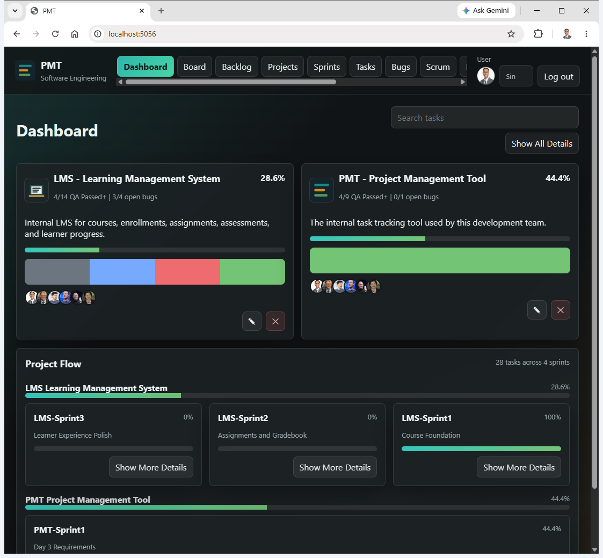
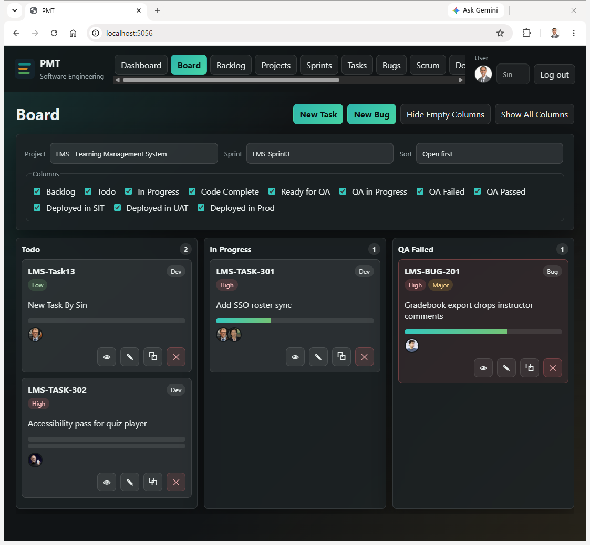

PMT has evolved into a working internal delivery platform for projects, sprints, tasks, bugs, scrum updates, documentation, users, and lookup management. The current build is focused on practical delivery visibility, team assignment control, and a modern dark UI.
Dashboard, Board, Projects, Sprints, Tasks, Bugs, Scrum, Documentation, Users, and Lookups.
Backlog through Deployed in Prod, including QA and deployment readiness states.
Tasks automatically complete when they reach QA Passed or a later workflow state.
Simple ASP.NET Core, ADO.NET, stored procedures, and schema-scoped SQL objects.
PMT now supports a usable project delivery workflow from intake through sprint execution, QA, deployment, documentation, and scrum communication. The application has a modern dark theme, seeded demonstration data for PMT and LMS projects, login/password support, avatar display, and role-based administration features.
Recent work has improved stakeholder visibility through a cleaner Dashboard, click-through navigation between Dashboard, Sprints, and Tasks, Board controls for hiding empty columns, and read-only-first Documentation viewing. The result is a more practical tool for daily tracking and management review.

